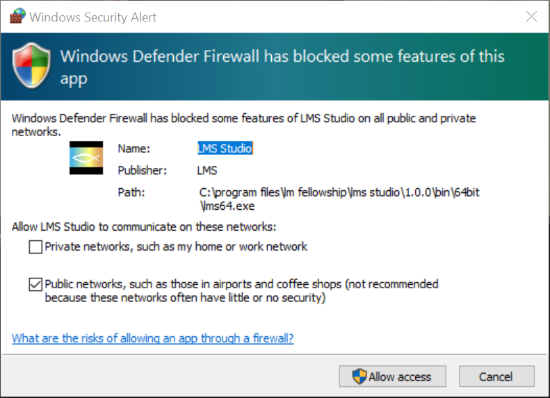
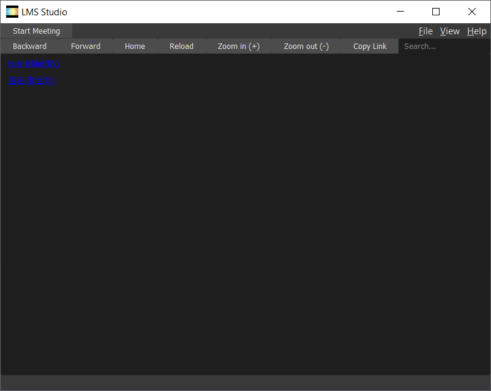

|
|---|
Help Portal
1. About Light Meeting Studio.
LMS is to develop an internet edge communication for the less fortunate part of the world. The main idea is a non-centralized zoom-kind meeting of an ultra-light server with a small number of multi-threading clients.
2. Where to download and how to install LMS?
LMS currently supports Windows 10 x64 bit only. Android version will be planned in the near future.
License policy is GNU GENERAL PUBLIC LICENSE.
You may download LMS in lightmeeting.github.io.
The default installation path is "C:\Program Files\LM Fellowship\LMS Studio\rundir\Release\bin\64bit\lm64.exe".
You have to allow its access through Windows firewall.

1) Start Meeting command may be invoked under File menu, or from the center of Control panel.
2) Choose the right Bible-Book-Chapter-Verse, and click on OK button.

3) Login Dialog has two login modes: Host or Attendee.
Choose the right mode, type in username, click Apply button, and click OK button.

4) Host mode
Copy Bible verses(Joshua 7:14-21:21 Luke 16:14-17:22) and passcode(100227) separately and send to Attendees.

5) Attendee mode
Type in passcode.

Settings may be found under File menu.
Currently, English and Chinese are fully supported, and dozens of others languages are partially supported.

1) Local Service Settings is for you to Host the meeting.
Local Service Settings may be found under File menu. If you are only an Attendee, it is optional, and you do not have to setup. You may skip this section 6.
Input Local IPv4 public address, with format XXX.XXX.XXX.XXX(192.168.0.15). See below how to find your Local IPv4 public address.
Input a primary port number, from 1 to 6553(5150).
Secondary port number is automatically generated from the primary port number as 10 * primary + 1.
These two ports are the ports that you will enable your modem to do Port Forwarding.

2) How to find your Local IPv4 public address?
Using your favorite browser, you may find your Local IPv4 address,
either by clicking on the local
or through websites like
https://whatismyipaddress.com/
3) How to enable your modem to do Port Forwarding?
Using your favorite browser, login to your modem, either
http://192.168.1.1 or the kinds.
Secondly, add Port Forwarding as below, to forward UDP traffic of primary default port 5150 and secondary default port 51501. Or you may use other ports of your choice.